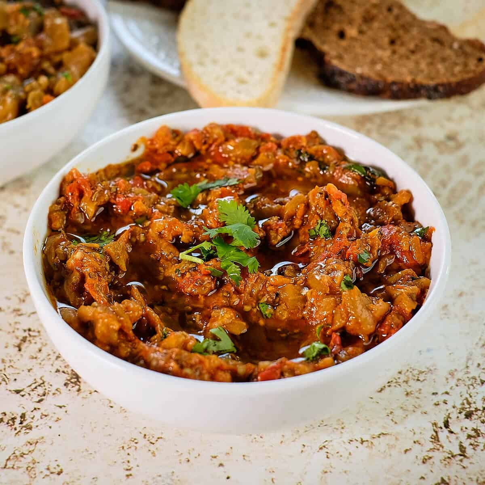

Zaalouk

Description
Zaalouk is one of the most basic dishes of Moroccan cuisine and there are
a million ways of preparing it all across Morocco. From region to region
or just from a family to another, the recipe often differs.
Ingredients
- 2 tablespoons olive oil and more to serve
- 2 large aubergines, peeled and chopped into large chunks
- 4 medium tomatoes seeded and chopped
- 2 garlic gloves, finely chopped or grated
- 1 teaspoon paprika
- ½ teaspoon ground cumin
- 1 teaspoon salt
- 1 tablespoon chopped fresh coriander and more to serve
Steps
-
In a medium sized pan, heat the olive oil and add all the ingredients.
Cover with a lid over medium-low heat until the vegetables are soft,
about 25 minutes. Stir occasionally to make sure the vegetables don't
stick to the pan.
-
Uncover, mash the vegetables (with a potato masher or the back of a
wooden spoon) and leave over medium heat until all the liquids
evaporate. Taste and adjust the seasoning with salt if necessary.
-
Serve warm or at room temperature, as a side, a dip or a spread. Drizzle
with olive oil and more chopped coriander